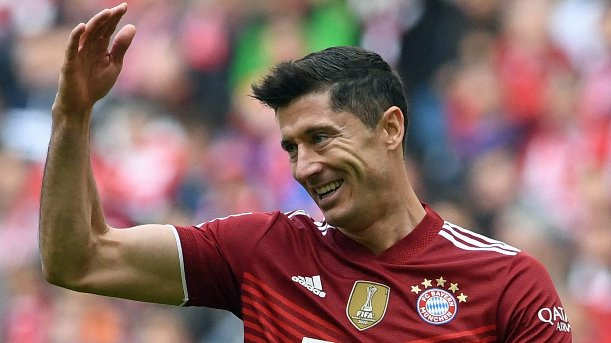
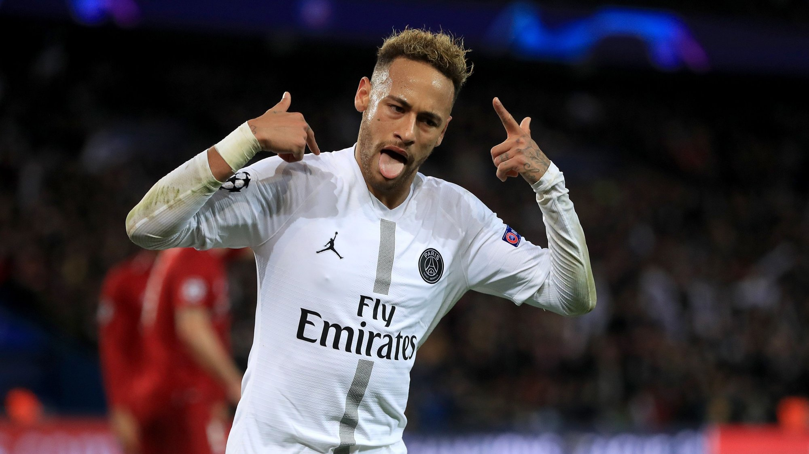

fotball har 11 spillerne i bana en keeper, 1 eller 2 eller 3 bak.
mint bana er 3 eller 2 spiller ving er det 2 spiller og 2 spis.
jeg vil spille fotball med venner mine fordi det er gøy å spille fotball med venner mine.
top 10 beste spiller i fotball er
1.den beste fotball spiller fotball er Lionel Messi full nevn hans er Lionel Andres Messi Cuccittini
født 24. juni 1987. han er en Argentinsk fotballsiller som spiller for den klubben Paris Saint.
2.en andre beste spiller i fotball er Robert Lewandowski full navn han er Robert Lewandowski
født 21. august 1988 er en polsk fotballspiller som spiller for den tyske klubben FC Bayern München og som kaptein på det polske landslaget.

3.den trejde beste spiller i fotball er Neymar full navn han er Neymar da Silva Santos Júnior
født 5. februar 1992 også kjent som bare Neymar eller Neymar jr., er en brasiliansk fotballspiller som spiller for den franske klubben Paris Saint-Germain FC.

4.den fjerde beste spiller i fotball er Cristiano Ronaldo full navn han er Cristiano Ronaldo dos Santos Aveiro
født 5. februar 1985 er en portugisisk fotballspiller som spiller for den engelske klubben Manchester United.
5.den femte beste spiller i fotball er Kevin De Bruyne full navn han er Kevin De Bruyne IFA:ˈkɛvɪn də ˈbrœnə
født 28. juni 1991 er en belgisk fotballspiller som spiller for den engelske klubben Manchester City FC og det belgiske landslaget.
6. den sjette beste spiller i fotball er Karim Benzema full navn han er Karim Mostafa Benzema
født 19. desember 1987 er en fransk fotballspiller som spiller for den spanske klubben Real Madrid CF
7 den sjende bsete spiller i fotball er Kylian Mbappé full navn han er Kylian Sanmi Mbappé Lottin utt. kiliaŋ embappe,
født 20. desember 1998 er en fransk fotballspiller som spiller for Paris Saint-Germain FC.
8. den åtte beste spiller i fotball er Harry Kane full navn han er Harry Edward Kane
født 28. juli 1993 er en engelsk fotballspiller som spiller for Tottenham Hotspur FC.
9. den niende beste spiller i fotball er Casemiro full navn han er Carlos Henrique José Francisco Venâncio Casimiro
født 23. februar 1992 er en brasiliansk fotballspiller som spiller for den spanske klubben Real Madrid CF.
10. den tiende beste spiller i fotball er Mohamed Salah Mohamed full navn han er Salah Ghaly
født 15. juni 1992 er en egyptisk fotballspiller som spiller for den engelske klubben Liverpool FC.Han spiller også for Egypts herrelandslag i fotball